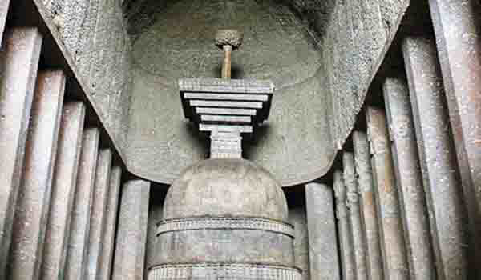

महाराष्ट्रातील पुणे जिल्ह्यातील मावळ तालुक्यात बेडसे लेणी आहेत . बेडसे लेण्यांमध्ये दोन मुख्य लेण्यांचा समावेश आहे. सर्वात लोकप्रिय गुहा चैत्य किंवा प्रार्थना सभागृह म्हणून ओळखली जाते आणि त्यात एक मोठा स्तूप आहे. दुसरे विहार किंवा मठ आहे. हे भाजे आणि कार्ला लेण्यांपेक्षा काहीसे कमी लोकप्रिय आहे परंतु कार्ला, भाजे आणि बेडसे यांचे त्रिकोण या लेण्यांना भेट दिल्याशिवाय अपूर्ण आहे.
बौद्ध भिक्षू पावसाळ्यात या विहारांमध्ये राहत असत म्हणून हे विहार पावसाच्या लेण्या म्हणून ओळखले जात. लेण्यांचे प्रवेशद्वार खांब आणि स्तंभांनी बनवले आहेत आणि घोडा, बैल, हत्ती आणि देवता यांच्या शिल्पांनी सुशोभित केलेले. दोन मोठ्या लेण्या व्यतिरिक्त, गुहेच्या संकुलात असंख्य लहान गुहा आणि पूर्णपणे ध्यान करण्याच्या उद्देशाने बांधलेली गुहा आहे.
या लेण्यांमध्ये पाण्याचे टाक्या आहेत ज्यायोगे स्प्रिंग्जपासून पाण्याचा नैसर्गिक शीतकरण होऊ शकतो. बेडसे लेणी पहिल्या शतकातील थोर अशोकाच्या कारकिर्दीच्या काळात या लेण्या बांधल्या गेल्या आहेत. बेडसे लेण्यांना ऐतिहासिक महत्त्व आहे. कलिंग युद्धामुळे या महान शासकाचे आयुष्य बदलले. तो इतका दु: खी झाला आणि त्याने पश्चात्ताप केला की त्याने हिंसाचारापासून दूर राहायचे आणि कधीच शस्त्रे न घेण्याचा निर्णय घेतला. प्रायश्चित करण्यासाठी अशोकाने बौद्ध धर्म स्वीकारला आणि प्रार्थना करण्यासाठी अनेक बौद्ध मठ बांधले. बेडसे लेणी त्यापैकी एक आहेत.